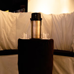
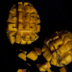

Plywood, Walnut, infrared Sensor, Laptop, Bass Amplifier
An installation in which one's proximity perturbs the balance of a fragile item. The sensor is programmed to detect proximal movement and, as a function of the distance between the observer and the piece, increases or decreases the amount of bass amplification and vibration. As a result, the movements of the observers will determine if the fragile item remains atop the piece or shatters..
{kind=link}
Plywood, Walnut, infrared Sensor, Laptop, Bass Amplifier
An installation in which one's proximity perturbs the balance of a fragile item. The sensor is programmed to detect proximal movement and, as a function of the distance between the observer and the piece, increases or decreases the amount of bass amplification and vibration. As a result, the movements of the observers will determine if the fragile item remains atop the piece or shatters.
{kind=link}
Cherry, Glass, Napkins, Laser Engraver
Uniquely laser etched napkins are encased behind protective glass, suggesting the fragility and transitory nature of the piece. Each napkin is precisely etched with a different quote, all of which are presented in front of three defused LED lights.
{kind=link}
Cherry, Glass, Napkins, Laser Engraver
Uniquely laser etched napkins are encased behind protective glass, suggesting the fragility and transitory nature of the piece. Each napkin is precisely etched with a different quote, all of which are presented in front of three defused LED lights.

{kind=link}
CNC, MDF, Metal, Fabric, Speakers, High Density Foam
This installation incorporates smell, sound and taste, the result of which is an enveloping state of sensory stimulation. The chairs are crafted in style of a coffee cup and are large enough to seat one adult. Hidden speakers, installed within the chairs, play dulcet melodies composed from a combination of recorded coffee sounds. The environment offers a chance for the viewer to participate, inviting them to break free from the common apprehension to touch and interact with art. As a whole, the experience of Equanimity allows the participant to escape the humdrum rhythms of daily life and experience a perceptually rich meditation shaped by the ubiquitous theme of coffee.
{kind=link}
CNC, MDF, Metal, Fabric, Speakers, High Density Foam
This installation incorporates smell, sound and taste, the result of which is an enveloping state of sensory stimulation. The chairs are crafted in style of a coffee cup and are large enough to seat one adult. Hidden speakers, installed within the chairs, play dulcet melodies composed from a combination of recorded coffee sounds. The environment offers a chance for the viewer to participate, inviting them to break free from the common apprehension to touch and interact with art. As a whole, the experience of Equanimity allows the participant to escape the humdrum rhythms of daily life and experience a perceptually rich meditation shaped by the ubiquitous theme of coffee.
{kind=link}
Birch, Microphone, Projector, Laptop, Max/MSP, Speakers, Steel
A peacock's plumage and a microphone, while superficially quite different, retain intriguing similarities on close examination. Both objects are used in signaling and communication, and both exhibit the cardioid pattern in their structure. This installation explores the curious connections between a peacock's plumage and a microphone.
Sculptures

{kind=link}
Mangos, Wire
A sculpture which takes what appears to be a harmless fruit and transforms it into a gritty, devastating weapon.

Red Lettuce, Banana, Wire, Paper
A sculptural scene made from vegetables and fruit, portraying a violent storm on the embroiled sea. The scene depicts the wrath of the Greek god Poseidon, whose awesome powers consume a victim as easily as a mortal might consume a meal.